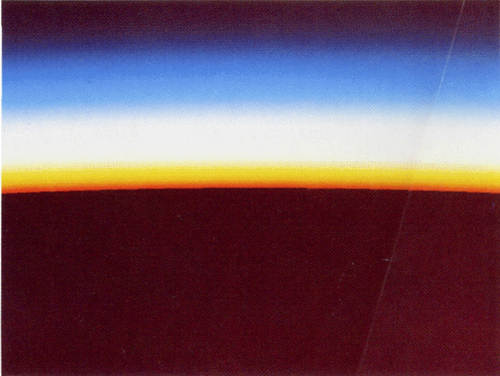

CS 184: Computer Graphics and Imaging, Spring 2023
Final Project: Sky, and Rainbow
Zhihan Cheng, Yuerou Tang, Debby Lin, Long He

Rendered Sky from Nishita et al., Siggraph 1993
Summary
In this project, we attempted to render a scene with sky and rainbow.
We would like to render the sky by simulating the atmospheric scattering and sunlight,
and use them to calculate the color of the pixels.
Part 1: Ray Generation and Scene Intersection (20 Points)